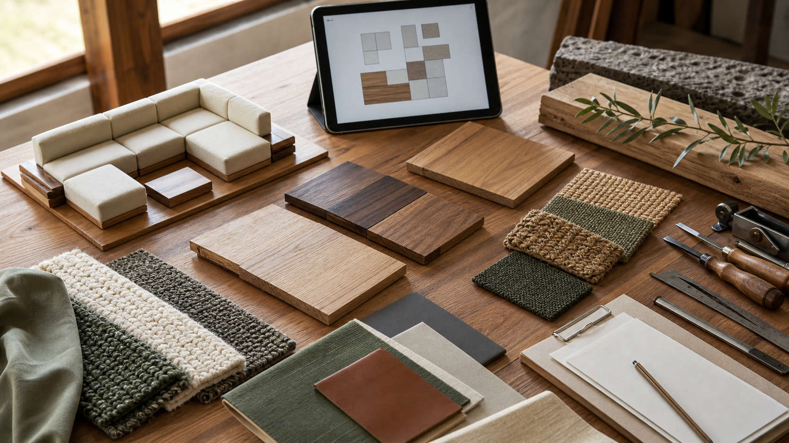

2026.07.24 가구·인테리어·목공 일일 트렌드

오늘의 흐름은 “가구가 더 구체적인 생활 문제를 해결해야 한다”로 압축됩니다. 야외가구는 단순한 날씨 대응을 넘어 디자인 트레이드와 맞춤 마감으로 이동하고, 오디오 결합 가구는 전자제품이 아니라 완성된 생활 가구로 팔리기 시작했습니다. 러그와 모듈 소파는 실내의 분위기와 동선을 조율하는 핵심 요소가 되었고, 전시회는 바이어가 빠르게 판단할 수 있도록 테마, 앱, 사전 투표 같은 큐레이션 장치를 강화하고 있습니다.
1. Lane Venture, 야외가구를 디자인 트레이드 중심으로 재정렬
Furniture Today는 7월 23일 Casual Market Atlanta 현장에서 Lane Venture가 전통적인 야외가구 브랜드 자산을 바탕으로 새 세대 디자이너와 리테일러를 겨냥하고 있다고 보도했습니다. Bassett 산하의 이 브랜드는 18~20개 컬렉션을 새로 도입했고, 디자인 트레이드 매출이 전체의 40%까지 커졌다고 설명했습니다. 국내 생산 알루미늄 라인에는 20가지 마감 옵션을 제공해 프로젝트별 색상과 머천다이징 요구에 대응하고 있습니다.
왜 중요할까. 야외가구 시장에서도 “기성품을 고르는 일”보다 “공간에 맞게 조율하는 일”의 가치가 커지고 있습니다. 목간은 야외용 벤치, 테라스 테이블, 현관 수납 같은 품목을 제안할 때 수종, 마감, 쿠션, 금속 다리 색상, 유지관리 주기를 하나의 선택표로 묶어 보여줄 필요가 있습니다.
2. Soundstage USA, 고급 오디오 결합 가구를 야외로 확장
Furniture Today는 7월 23일 Soundstage USA가 Pamlico Sound라는 6개 그룹의 야외 좌석 컬렉션을 Casual Market Atlanta에서 선보였다고 전했습니다. 이 컬렉션은 용접 알루미늄 프레임, 분체도장 마감, 야외용 폴리머 위커, 퍼포먼스 패브릭에 증폭기, 스피커, 서브우퍼, 방수 연결부를 공장 설치 방식으로 통합합니다. Marathon 그룹은 이미 공급 중이고 나머지 그룹은 2027년 초 출하를 목표로 합니다.
왜 중요할까. 기능 결합형 가구는 “부품을 붙인 가구”처럼 보이면 신뢰를 얻기 어렵습니다. 목간이 조명, 충전, 케이블 정리, 스피커, IoT 센서 같은 기능을 검토한다면 먼저 가구의 구조 안정성, 수리 접근성, 습기·열·먼지 보호, 전선 교체 동선을 설계 기준으로 세워야 합니다.
3. DWR 가을 컬렉션, 러그·소파·침대에서 협업형 상품기획 강화
Furniture Today는 7월 22일 Design Within Reach의 Fall 2026 컬렉션을 소개하며 Flamingo Estate와 Beni Rugs의 러그, Studio & Projects의 Semita 러그, Norm Architects의 Sval 모듈 소파, Emilio Halperin의 Corbel Bed 등을 짚었습니다. Home Accents Today의 Rug Report 역시 Capel의 모로코풍 수공 러그, Ernesta의 쇼룸 확장, DWR의 수공 러그 협업을 함께 다루며 텍스처와 촉감 중심의 바닥재 흐름을 강조했습니다.
왜 중요할까. 원목가구는 혼자 완성되는 제품이 아니라 러그, 패브릭, 조명, 벽 색과 함께 읽힙니다. 목간의 상품 사진과 공모전 제출물에도 테이블 단품 컷만 반복하기보다, 러그의 결, 의자 패브릭, 조명 높이, 수납장 주변 여백을 함께 배치해 “사용될 방의 밀도”를 보여주는 연출이 필요합니다.
4. Las Vegas Market, 테마형 큐레이션과 디지털 사전 계획을 강화
ANDMORE는 7월 22일 Las Vegas Market Summer 2026을 앞두고 Market Snapshot People’s Choice Awards 투표, Market Stars, 디지털 계획 도구를 공개했습니다. 25개 결선 제품은 At Home Healing, Crafted Natural, Petopia, Fun in the Sun, Hyperbloom 같은 시즌 테마로 묶였고, 수상 제품은 마켓 개막일인 7월 26일 발표됩니다. 공식 발표는 ANDMORE Markets 앱과 Preview Guide가 쇼룸 저장, 길찾기, 사진 기록, 후속 연락을 돕는다고 설명했습니다.
왜 중요할까. 바이어는 제품을 하나씩 보는 것이 아니라 테마별로 빠르게 비교합니다. 목간의 일일 트렌드 탭, 포트폴리오, 맞춤 가이드는 “좋은 원목가구”라는 넓은 말보다 자연 치유형 거실, 반려동물 공존 수납, 여름 테라스, 신혼 소형 주거처럼 쓰임이 드러나는 묶음으로 재정리할 수 있습니다.
5. HT Market의 캄보디아 생산 전환, 리드타임 설명이 판매 역량이 됨
Furniture Today는 7월 22일 HT Market이 HT Design 홈시어터 좌석 생산을 캄보디아 신규 공장으로 전환했다고 보도했습니다. 회사는 관세와 기존 공급망 변화에 대응해 중국 외 생산 옵션을 마련했지만, 캄보디아 출발 선적은 미국 서부 항만까지 해상 운송만 45~50일이 걸릴 수 있다고 설명했습니다. 같은 주 Furniture Today는 캐나다산 가구에 8월 19일부터 50% 관세가 예정되어 있다는 기사도 실어, 가구 가격과 납기의 불확실성이 계속됨을 보여줬습니다.
왜 중요할까. 공방 운영에서 납기 설명은 부가 안내가 아니라 신뢰의 핵심입니다. 목간은 견적서에 제작 기간, 목재 입고, 하드웨어 발주, 마감 경화, 배송 가능일을 분리해 적고, 수입 하드웨어나 패브릭을 쓰는 옵션은 대체 부품과 일정 리스크를 함께 제시하는 방식이 필요합니다.
오늘의 실무 인사이트
- 목간의 상품 묶음을 “공간 테마”로 바꾼다. 식탁, 벤치, 수납장 단품보다 작은 아파트 식사 공간, 반려동물 동선이 있는 거실, 여름 발코니, 공방형 홈오피스처럼 고객의 상황을 먼저 이름 붙이면 상담과 콘텐츠가 더 빨리 연결됩니다.
- 기능 결합형 가구는 수리성과 교체성을 먼저 설계한다. 충전, 조명, 스피커, 케이블 정리 기능을 넣을 때는 멋보다 전선 접근 구멍, 방열, 습기 차단, 부품 교체 방법, 보증 범위를 먼저 문서화해야 합니다.
- 원목 샘플 옆에 러그·패브릭 샘플을 같이 둔다. 오크와 월넛의 색 차이는 바닥재와 직물 위에서 더 명확해집니다. 상담 테이블에 나무, 패브릭, 금속 손잡이, 마감 샘플을 함께 놓으면 고객이 완성 공간을 상상하기 쉽습니다.
- 납기표를 제작 단계별로 분리해 신뢰를 만든다. 목재 수급, 가공, 조립, 샌딩, 마감, 경화, 포장, 배송을 각각 보이게 하면 일정 변동이 생겨도 설명이 투명해지고 공방 운영 부담도 줄어듭니다.
- 공모전 제출물에는 제품의 “매장 설명 문장”까지 준비한다. 심사위원과 바이어가 한눈에 이해하도록 제품명, 대상 공간, 핵심 구조, 소재 이유, 유지관리법을 3문장 안에 정리하면 디자인 의도가 더 선명해집니다.